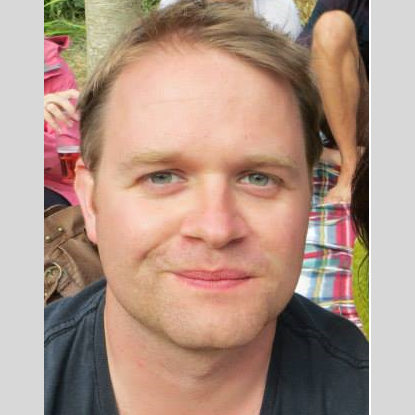

Abstract
The design of energy systems that can cope with the intermittency of renewable energy sources as well as the
lack of flexibility of demand is a crucial societal concern. Recently, several new technologies, such as
power-to-heat systems and electrical vehicles, have become ubiquitous, making energy system design even more
complex. The new discipline of Energy Informatics (EI) plays a central role in providing a scientific basis
for the design of complex energy systems. In addition to exploring technologies for reducing the overall
energy demand, it addresses (1) providing a higher extent of consumer flexibility so that more sustainable
and locally generated energy is used, (2) increasing the resilience of energy generation and (3) improving
the efficiency of new energy systems. It also provides methodologies and technologies to extract and manage
information from energy systems. Furthermore, it offers communication and information-processing principles
to operate energy systems securely.
The Summer School entitled “Communication Technology and Data Analytics for Future Energy
Systems” focuses on providing a strong foundation in the principles of Energy Informatics, with a
focus on communication technology, data management, and analytics. The summer school will be a venue for
graduate students, researchers and practitioners to learn about and contribute to this field.
The summer school is a joint event of the section „Energy Informatics“ within the German Informatics Society (Gesellschaft für Informatik) and the DFG Research Training Group “Energy Status Data –
Informatics Methods for its Collection, Analysis and Exploitation” at Karlsruhe Institute of
Technology (KIT). Leading researchers in the field of Energy Informatics will give an end-to-end
perspective on both the fundamentals as well as advanced topics of communication technology, data management
and analytics.
The summer school is co-organized by the Chair
of Computer Networks and Computer Communications led by Professor
Hermann de Meer, where the main contact person is Dr. Robert
Basmadjian. The chair's research focuses (amongst others) on the topics of energy efficient systems and
communication systems.
Registration for the summer school is closed.
Schedule
The schedule is also available as PDF.
A detailed description of the talks and workshops can be found in the event booklet.
| Time |
Monday
11. Sep |
Tuesday
12. Sep |
Wednesday
13. Sep |
Thursday
14. Sep |
Friday
15. Sep |
| 8:30 |
9:00 |
|
Prof. S. Keshav
Communication Technologies
for Energy Informatics
|
Prof. H.-A. Jacobsen, J. Rivera
OpenGridMap:
Crowdsourcing Power
Grid Data
|
Prof. S. Lehnhoff
Requirements Engineering
for Energy Information
Systems
|
Dr. F. Kupzok
Modelling Basics and
Co-Simulation of Communication
and Power Systems
|
| 9:00 |
9:30 |
| 9:30 |
10:00 |
| 10:00 |
10:30 |
Coffee Break |
Coffee Break |
Coffee Break |
Coffee Break |
| 10:30 |
11:00 |
S. Haben, Ph.D
Forecasts and Control for the
Smart Grid
|
Prof. D. Neumann
Data Analytics for Smart
Cities
|
Dr. T. Brown
Modelling the Electricity
Transmission Network with
High Shares of Renewable Energy
|
Workshop
Digital approaches to increase
renewable hosting capacity of distribution grids
|
| 11:00 |
11:30 |
| 11:30 |
12:00 |
| 12:00 |
12:30 |
Arrival & Registration (Map)
|
Lunch (Map)
|
Lunch |
Lunch |
Lunch |
| 12:30 |
13:00 |
| 13:00 |
13:30 |
| 13:30 |
14:00 |
Dr. C. Hinrichs
Data Analytics in
Practice
|
Prof. K. Böhm
Towards Better Privacy for
Energy-Status Data
|
Prof. A. Weidlich
Flexibility Modeling for
Power Systems
|
Workshop
Energy Time Series Storage and
Analytics (I)
|
Workshop
Smart Meter Privacy – Legal and
Technical Aspects
|
| 14:00 |
14:30 |
| 14:30 |
15:00 |
Prof. H. Schmeck
Motivation and Need for Developing Energy
Informatics
|
| 15:00 |
15:30 |
Coffee Break |
Coffee Break |
Coffee Break |
Coffee Break
& Closing |
| 15:30 |
16:00 |
Poster Session |
Poster Session |
Workshop
Energy Time Series Storage and
Analytics (II)
|
| 16:00 |
16:30 |
Coffee Break |
Departure |
| 16:30 |
17:00 |
Prof. S. Keshav
Communication Technologies
for Energy Informatics
|
Workshop
Ontologies for Energy Systems
|
Workshop
Power Grid Quality Modeling
|
| 17:00 |
17:30 |
|
| 17:30 |
18:00 |
| 18:00 |
18:30 |
Welcome Reception |
|
|
City Tour (Map)
|
| 18:30 |
19:00 |
| 19:00 |
19:30 |
|
Restaurant/Bar |
Summer School Dinner
Location: Oberhaus (Map)
|
| 19:30 |
20:00 |
Restaurant/Bar |
Restaurant/Bar |
| 20:00 |
20:30 |
| 20:00 |
end |
Map
A map of the Summer School Locations is available as PDF.
Speakers
Dr. Tom Brown
(Frankfurt Institute for Advanced Studies)
Tom Brown completed his BA and MMath in mathematics at the University
of Cambridge in 2004 and 2005 respectively. After a PhD in physics at
Queen Mary, University of London in 2009, he continued his physics
research as a Postdoctoral Researcher at DESY, Germany. In 2012 he
switched fields to work on power systems at consultancy firm
Energynautics GmbH, and since 2015 he has been working as a
Postdoctoral Researcher on the grid integration of renewable energy at
the Frankfurt Institute for Advanced Studies. His research focuses on
system planning for high shares of renewables, including the
requirements for the expansion of the transmission grid, flexibility
options and coupling to other energy sectors such as transport and
heating. He is an advocate of open data and software in the energy
modelling community and is one of the lead developers of the
widely-used free software tool Python for Power System Analysis
(PyPSA) (https://pypsa.org/).

Dr. Stephen Haben
(University of Oxford)
Stephen Haben is a post-doctoral research associate in the Mathematical
Institute at the University of Oxford. He is also a member of the Oxford Centre for Industrial
and Applied Mathematics (OCIAM). Since 2014 he has been an active member of the Industrially
Focused Mathematical Modelling (InFoMM) CDT.
After completing his undergraduate mathematics degree at the University of Warwick in 2006 he
completed a master in modern applications of mathematics at the University of Bath in 2007. In
2011 he achieved his PhD in the conditioning and preconditioning of variational data
assimilation problem at the University of Reading before moving to the University of Oxford
later in 2013.
His most recent work was as the academic project manager and lead researcher on the £30M low
carbon network fund project the “Thames Valley Vision”. On the project, Dr Haben investigated
forecasting and mathematical analytical methods for low voltage network demand data for use in a
number of applications including scenario forecasting, battery storage control and modelling
with limited data.
Since 2012 he has been the co-organiser of 4 low voltage demand workshops which focus on
forecasting, control and analytical methods applied to low voltage network demand data. In 2014
he was on a prize winning team for the Global Energy Forecasting Competition 2014. His interests
include forecasting, clustering methods, optimization, data assimilation, kernel density
estimation, quantile regression and error measures.
Prof. Hans-Arno Jacobsen
(Technical University of Munich)
Hans-Arno Jacobsen is a professor of Computer
Engineering and Computer Science and directs the activities of the
Application and Middleware Systems Research Group. He conducts
research at the intersection of distributed systems and data
management, with a particular focus on middleware abstractions,
(complex) event processing, and cyber-physical systems. After studying
and completing his Ph.D. in Germany, France, and the U.S., he engaged
in post-doctoral research at INRIA near Paris, before moving to the
University of Toronto in 2001. In 2011, he was awarded the Alexander
von Humboldt-Professorship to engage in research at TUM in Germany on
"Energy Informatics."

Prof. Srinivasan Keshav
(University of Waterloo)
Professor S. Keshav received a B.Tech in Computer Science and Engineering from
IIT Delhi in 1986 and a Ph.D. in Computer Science from the University of California, Berkeley in
1991. He was subsequently a researcher at AT&T Bell Laboratories and, from 1996 to 1999, an
Associate Professor at Cornell University. In 1999 he left academia to co-found Ensim
Corporation and GreenBorder Technologies Inc. He was an Associate Professor at the University of
Waterloo from 2003 to 2008 and has been a Professor since, holding a Canada Research Chair
(2004-14) and the Cisco Chair in Smart Grid (2012-17). An awardee of the Director's Gold Medal
from IIT Delhi, the Sakrison Prize from UC Berkeley, two Test of Time awards from ACM SIGCOMM,
and Best Paper awards at both ACM SIGCOMM and ACM MOBICOM, he is the co-director of the
Information Systems and Science for Energy Laboratory, author of two graduate textbooks on
computer networking, an Alfred P. Sloan Fellow, an ACM Fellow, and currently Chair of ACM
SIGCOMM.
Dr. techn. Friederich Kupzog
(Austrian Institute of Technology)
Dipl.-Ing. Dr. techn. Friederich Kupzog holds a Diploma Engineer degree of
electrical engineering and information technology from RWTH Aachen. In 2006, he joined the
Institute of Computer Technology at TU Wien, Austria, where he achieved his PhD Degree in 2008.
Until 2012, he stayed at the university as Post-Doc and built up the research group ”Energy
& IT“ at the Institute of Computer Technology. Since 2012, Dr. Kupzog is Senior Scientist
at the AIT Austrian Institute of Technology GmbH. His research interest lies in verification
methods for networked Smart Grid systems. He coordinates the research field ”Power System
Digitalisation“ within AIT, consisting of research projects together with industry, power
grid operators and other partners.
Dr. Kupzog holds lectures in Smart Grid related topics at Vienna University of Technolgy and
other universities and is active in national (ComForEn) and international (IEEE IECON,
IEEE/CIGRE EDST, D-A-CH Energieinformatik) scientific conference organisation. He was awarded
the Austrian Smart Grid Pioneer Award together with his colleagues in 2010 and 2012.

Prof. Sebastian Lehnhoff
(University of Oldenburg)
Sebastian Lehnhoff is a Full Professor for Energy Informatics at the University
of Oldenburg. He received his doctorate at the TU Dortmund University in 2009. Prof. Lehnhoff is
a member of the executive board of the OFFIS Institute for Information Technology and speaker of
its Energy R&D division. He is speaker of the section “Energy Informatics”
within the German Informatics Society (GI), assoc. editor of the IEEE Computer Society’s
Computing and Smart Grid Special Technical Community as well as an active member of numerous
committees and working groups focusing on ICT in future Smart Grids. He is an honorary professor
of the School of Information Technology and Electrical Engineering at the University of
Queensland. Prof. Lehnhoff is elected chair of the of the IEEE CA4EPI Working Group P2030.4, and
chairman of the architecture and quality committee of the openKONSEQUENZ industry consortium for
the development of open source software in power system operation. Prof. Lehnhoff is author of
over 100 refereed and peer-reviewed scientific publications.
His research interests focus on the large-scale integration of decentralized, renewable energy
sources into the electricity supply system in combination with the politically motivated
reorganization of corporate structures and business processes. The Energy Informatics group in
Oldenburg develops ICT-technologies for a future reliable, robust, profitable electricity supply
system based on renewable energies – the Smart Grid. Key issues are:
- Open communication standards and data models to ensure the interoperability of
IT-architectures.
- Real-time methods for automating the distribution network to enable distributed plants at
lower voltage levels to provide ancillary services.
- Distributed algorithms for decentralized resource planning within distribution networks to
increase flexibility.
- Methods and tools to assess and support changing ICT-corporate architectures of energy
supply protagonists.
- Methods for simulation and automated analysis of large-scale integrated multi-domain energy
systems.

Prof. Harmut Schmeck
(Karlsruhe Institute
of Technology)
Hartmut Schmeck studied at the Universities of Kiel (Germany) and Waterloo
(Canada). He got his academic degrees (Dipl. Inform., Dr.rer.nat., Dr. habil) at Kiel. Since
1991 he is a Full Professor of Applied Informatics at the Karlsruhe Institute of Technology -
KIT. He is (co-)author of more than 200 publications on advanced algorithms and architectures,
in particular on nature-inspired methods in optimisation, algorithms for reconfigurable
architectures, and, more recently, on self-organising, adaptive systems applied to energy and
traffic systems. He has been program and conference chair for numerous international workshops
and conferences and coordinator of the German priority research program SPP 1183 on “Organic
Computing”. As a principal investigator of several cooperative projects in various funding
programmes he is pushing the development of intelligent systems in tomorrow's energy systems and
for electric mobility, shaping the new discipline of “Energy Informatics”, in
particular as a director of the FZI Research Center for Information Technology.

Prof. Anke Weidlich
(University of Freiburg)
Anke Weidlich is a professor for Technologies of Energy Distribution at the
University of Freiburg.
Before, she was a professor for Energy Economics and Energy Systems Technology at the University
of Applied Sciences
in Offenburg from 2011 until 2017. Ms. Weidlich gained industry experience as a senior
researcher and project leader
in the domain of Smart Grids at SAP AG (today: SAP SE). Prof. Weidlich studied Industrial
Engineering and Business
and then pursued advanced studies in Energy Economics and Energy Policy in Paris. She pursued
PhD studies at the University
of Karlsruhe (today: Karlsruhe Institute for Technology KIT), with stays in the USA and in
Mannheim.
Dr. Christian Hinrichs
(BTC Business Technology
Consulting AG)
Christian Hinrichs graduated in computer sciences at the Carl von Ossietzky
University of Oldenburg,
Germany, before working as research associate in the Dept. of Environmental Informatics.
His research focused on self-organized coordination and distributed heuristics in the domain of
energy systems.
After receiving his doctorate in 2014, he continued working in a postdoctoral position for
another two years.
Since 2016, he is employed as Senior Consultant by BTC Business Technology Consulting AG,
Germany,
occupying the roles Data Scientist and Analytics Architect. A significant part of his work
focuses on building
cloud-based big data platforms for advanced analytics and smart data services.

Dipl.-Ing. (Univ.)
Jose Adan Rivera Acevedo
(Technical
University of Munich)

Prof. Klemens Böhm
(Karlsruhe Institute of Technology)
Klemens Böhm is full professor (chair of databases and information systems) at
the Karlsruhe Institute of Technology (KIT), Germany, since 2004. Prior to that, he has been
professor of applied informatics/data and knowledge engineering at University of Magdeburg,
Germany, senior research assistant at ETH Zürich, Switzerland, and research assistant at GMD –
Forschungszentrum Informationstechnik GmbH, Darmstadt, Germany. Current research topics at his
chair are knowledge discovery and data mining in big data, data privacy and workflow management.
Klemens gives much attention to collaborations with other scientific disciplines and with
industry. He is the speaker of the DFG research training program 2153 "Energy Status Data –
Informatics Methods for its Collection, Analysis, and Exploitation" at KIT.
Prof. Dirk Neumann
(University of Freiburg)
Dirk Neumann holds the Chair of Information
Systems of the University of Freiburg, Germany. His research topics include business analytics,
text mining and optimization. He studied information systems in Giessen (Diploma) and Economics
in Milwaukee, U.S. (Master) and earned a Ph.D. from Karlsruhe Institute of Technology in 2004.
Organizers
University of Passau
Passau is a city located in Lower Bavaria, Germany next to
the
border to Austria at the meeting point of the rivers Danube, Inn and Ilz.
The University of Passau has around 12,000 students
and
doctoral researchers.
The Faculty of Computer Science and
Mathematics has 18 professors and encompasses 4 institutes with focuses ranging from
theoretical computer science and software engineering to information systems, IT Security and
technical applications of computer science (computer engineering).
The summer school is co-organized by the Chair of Computer Networks and
Computer Communications led by Professor
Hermann de Meer. The chair's research focuses (amongst others) on the topics of energy
efficient
systems and communication systems.
German Informatics Society (GI)
The German Informatics Society (GI) is the largest German-speaking
non-profit
association for computer science.
It is comprised of computer scientists from both academia as well as industry and is involved in the
formal
education in schools and universities.
The GI provides possibilities for knowledge exchange and collaboration amongst peers and furthers
computer
science education.
The members are structured in regional groups (“Regionalgruppen”) and topically
into
technical groups with focuses ranging from Computer Science Foundations to Databases and Information
Systems, Communication Systems, and Software Engineering.
Research Training Group "Energy Status Data – Informatics Methods for its Collection, Analysis and
Exploitation"
The research-training group is funded by the German National Science Foundation (DFG) with funds from the
Federal
Government and the German states. It has started on May 1st 2016 and has a duration of 4.5 years.
An essential aspect is the consumption of energy, particularly of complex systems such as factories or IT
infrastructures. Important points are the flexibilization of energy consumption, so that the share of
locally generated 'green' energy increases, robustness of energy provisioning, or the efficient design
of
new energy systems serving these purposes. To accomplish this, a core prerequisite is a structured
collection, storage and analysis of energy status data. Energy status data describes the provisioning of
energy, its storage, transmission and consumption, be it the outcomes of measurements, be it metadata
such
as the extent of fatigue of batteries, be it other relevant data such as electricity rates.
This Research Training Group targets at the handling of energy-status data. To this end, an
interdisciplinary
approach (computer science, engineering, economics, law) is indispensable. It reveals new scientific
challenges our Ph.D. students are confronted with as part of their education. For instance, we have
observed
that different planning and control purposes require data of different temporal resolution and at
different
aggregation levels. This varying granularity leads to the question how to find outliers in such data at
the
right level of abstraction. Other graduates benefit from new approaches that detect such outliers. They
can
now work more efficiently, e.g., can identify shortcomings of existing models of energy systems
systematically. An example of such a model would be one describing the behavior of Li-Ion batteries. The
infrastructure for energy research of the KIT Helmholtz sector such as the EnergyLab 2.0 will be
subject/object of the Research Training Group to a significant extent; the persons responsible for these
facilities are part of the principal investigators of this Research Training Group.
Contact
If you have any questions regarding the summer school, please feel free to contact us via mail: info ∂ future-energy-systems.org